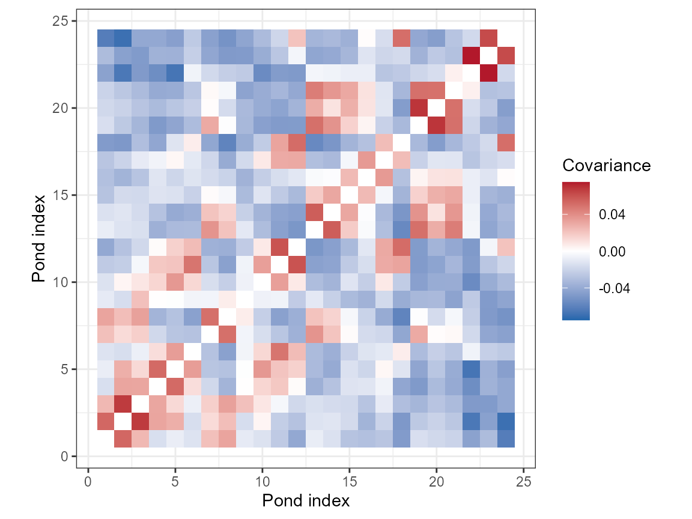

02. Choosing and Checking a Genetic Covariance Response
Bill Peterman
Source:vignettes/v02-wishart-covariance.Rmd
v02-wishart-covariance.RmdGoal. Choose a genetic response, preserve its sample order, and check its mathematical properties before fitting.
The data-generation guide
explains the landscapes, SLiM histories, sampling, and matched markers
used in these examples. Open it in R with
vignette("v12-data-generation", package = "terradish").
What genetic quantity are you modeling?
A genotype table needs a biological sampling unit and a documented
transformation before it becomes a model response. This guide checks
that transformation for the Ohio pond samples fitted in vignette("v01-getting-started", package = "terradish").
The 24 ponds are demes (local breeding populations), each with 20 retained diploid animals genotyped at matched SNPs and microsatellites. Grouping animals by pond estimates relationships among ponds, while leaving them ungrouped asks about individuals and requires a different sampling and measurement assessment.
| Available input | Response construction | Modeling question |
|---|---|---|
| SNP dosage, 0, 1, or 2 | Aggregate allele counts by pond, then construct covariance | How do standardized allele frequencies covary among ponds? |
| Two microsatellite allele calls per locus | Expand allele labels into features, then group | How do multiallelic feature summaries covary among ponds? |
| An existing genetic dissimilarity | Document its definition and dependence | How does pairwise genetic difference relate to resistance? |
Which response should you model?
- Use a covariance response with
measurement_model = wishart_covariancewhen you have genotypes, can build the covariance withcov_from_biallelic()orcov_from_genetic_data(), and can defend a value ofnu, the effective Wishart information (not a count of independent markers). Its squared distances fromdist_from_cov()give the same likelihood undergeneralized_wishart. - Use a pairwise distance with
measurement_model = mlpewhen you start from a distance such as or , when the distance failscheck_distance_response(), or when you cannot justifynu. MLPE (maximum likelihood population effects) regresses genetic distance on resistance distance, accounts for correlation between pairs that share a site, and estimates its own residual variance, so it needs nonu.vignette("v03-mlpe-pairwise-distance", package = "terradish")fits one and reads its summary.
Passing the geometry check below shows that a response is a valid covariance, not that it follows a Wishart distribution.
Preserve sampling order and marker meaning
library(terradish)
data(ohio_ponds)
ponds <- ohio_ponds$ponds
animals <- ohio_ponds$samples
G <- ohio_ponds$snp
stopifnot(identical(rownames(G), animals$individual),
identical(rownames(ohio_ponds$microsat), animals$individual))
groups <- factor(animals$pond, levels = ponds$pond)
# Counts and haploid totals must refer to the same ordered ponds.
Y <- rowsum(G, groups, reorder = FALSE)[ponds$pond, , drop = FALSE]
N <- 2 * as.numeric(table(groups))
stopifnot(all(N == N[1]), identical(rownames(Y), ponds$pond))
S_snp <- cov_from_biallelic(Y, N) / N[1]
# Repeat counts identify alleles; they are not continuous SNP dosages.
S_ms <- cov_from_genetic_data(ohio_ponds$microsat, groups = groups,
input = "allele_calls", loci = ohio_ponds$microsat_loci,
diagonal = "gower", normalize = "features")
c(ponds = nrow(S_snp), haploid_copies_per_pond = N[1],
snps = ncol(G), microsatellite_loci = ncol(ohio_ponds$microsat) / 2)
#> ponds haploid_copies_per_pond snps
#> 24 40 2500
#> microsatellite_loci
#> 24How to read the output. Each covariance is 24 by 24,
although the genotype matrices have 480 rows. Every pond contributes 40
sampled allele copies at each SNP, so dividing the count covariance by
the common N[1] gives a standardized frequency covariance.
Do not apply that shortcut to unequal sample sizes (Getting Started
gives the formula).
normalize = "features" puts the microsatellite
covariance on a per-feature scale, and expanded allele features are not
loci. SNPs and microsatellites differ in encoding and mutation process,
so compare their fitted directions and predictive performance within
each panel, not their covariance values or likelihoods. The panels share
ancestry, so they are not ecological replicates.
Check covariance and distance geometry
A positive semidefinite covariance gives no negative variance for any linear combination of the ponds’ allele-frequency deviations. Centering across ponds removes the common mean direction, so expect a zero eigenvalue. Tiny negative values from floating-point rounding are not substantial violations.
geometry <- function(S) {
ev <- eigen(S, symmetric = TRUE, only.values = TRUE)$values
c(symmetry_error = max(abs(S - t(S))),
maximum_absolute_row_sum = max(abs(rowSums(S))),
relative_minimum_eigenvalue = min(ev) / max(abs(ev)))
}
rbind(SNP = geometry(S_snp), microsatellite = geometry(S_ms))
#> symmetry_error maximum_absolute_row_sum
#> SNP 0 1.845746e-15
#> microsatellite 0 1.165734e-15
#> relative_minimum_eigenvalue
#> SNP -7.399139e-17
#> microsatellite 5.000813e-17
# dist_from_cov() already returns squared distances; do not square them again.
D <- dist_from_cov(S_snp)
diagnostic <- check_distance_response(D)
diagnostic[c("admissible", "relative_min_eigenvalue", "n_negative")]
#> $admissible
#> [1] TRUE
#>
#> $relative_min_eigenvalue
#> [1] -1.429493e-16
#>
#> $n_negative
#> [1] 0How to read the output. Near-zero symmetry errors
and row sums support the intended centered construction. They do not
test sample order, because a covariance is symmetric and centered under
any ordering of its rows. admissible = TRUE means the
squared distances have acceptable covariance geometry within numerical
tolerance. It says nothing about marker filtering, relatedness, unequal
sampling variance, or the biological adequacy of the measurement
likelihood.
The two representations satisfy
Here is the number of ponds, centers across ponds, and recovers the centered covariance. Confirm the round trip:
H <- diag(nrow(D)) - 1 / nrow(D)
B <- -0.5 * H %*% D %*% H
c(maximum_roundtrip_error = max(abs(B - H %*% S_snp %*% H)))
#> maximum_roundtrip_error
#> 3.330669e-16
stopifnot(diagnostic$admissible,
max(abs(B - H %*% S_snp %*% H)) < 1e-10)How to read the result. A near-zero error confirms
that the conversion keeps the site contrasts the Wishart interfaces use.
Covariance input adds no information, so covariance and distance fits
should agree numerically when response scaling, graph, sites, and
nu match. Ranking the two representations as competing
biological models answers no useful question.
Inspect the response as a matrix
library(ggplot2)
covariance_cells <- expand.grid(pond_i = seq_len(nrow(S_snp)),
pond_j = seq_len(ncol(S_snp)))
covariance_cells$covariance <- as.vector(S_snp)
# Blank the diagonal: the much larger pond variances would wash out the colors.
covariance_cells$covariance[covariance_cells$pond_i == covariance_cells$pond_j] <- NA
limit <- max(abs(covariance_cells$covariance), na.rm = TRUE)
ggplot(covariance_cells, aes(pond_i, pond_j, fill = covariance)) +
geom_tile() + coord_equal() + theme_bw() +
scale_fill_gradient2(low = "#2166AC", mid = "white", high = "#B2182B",
limits = c(-limit, limit), na.value = "white",
name = "Covariance") +
labs(x = "Pond index", y = "Pond index")
Between-pond SNP covariance in sampling order. Red cells are pond pairs whose allele frequencies depart from the mean in the same direction; blue cells, in opposite directions. The diagonal (pond variances) is left blank.
How to read the map. Red cells mark pond pairs that share allele-frequency departures, usually because the two ponds are close or well connected. Negative values are expected after centering. Ponds appear in table order (P01 to P24), which is an identifier order and not a spatial one, so do not expect contiguous blocks unless you reorder ponds along a spatial axis.
This map cannot reveal a mismatch between genotype rows and ponds.
The covariance is symmetric under any row order, so a misaligned
response still looks like a valid matrix. Only the
stopifnot() checks on row names in the first chunk guard
the order. A misaligned response tends to show up later, as a fit that
does no better than uniform conductance.
Separate marker count from assumed information
The fitted covariance is
Here is the graph covariance, which changes with the conductance coefficients , and scales it. The diagonal nugget absorbs variation the graph misses and does not estimate population size or raster context.
You supply nu, the effective Wishart information, which
weights the likelihood. The pond guides assume 40, which is neither the
2,500 SNPs nor the 40 allele copies sampled per pond. Linkage and shared
history prevent any simple conversion from marker count to independent
information.
For a fixed response and model, multiplying nu does not
move the theoretical optimum. It changes interior standard errors in
proportion to
and changes the size of likelihood gains relative to the AIC penalty.
Boundary estimates require separate treatment. Use
terradish_rescale_nu() to report sensitivity and held-out
ponds to check transfer, but neither estimates the correct
nu.
Fit the checked response
The checks above establish that S_snp is a coherent
response. The fit below uses it with the fixed 500 m forest context from
Getting Started, then refits the matching squared distances to confirm
that the two representations carry the same information. Both fits run
when this guide is built and take a few seconds.
library(terra)
#> terra 1.9.34
# One standardized layer is enough here: forest fraction in a 500 m context.
forest500 <- scale_covariates(unwrap(ohio_ponds$forest500))
surface <- conductance_surface(forest500, ponds[c("x", "y")], directions = 8)
control <- NewtonRaphsonControl(maxit = 200, ctol = 1e-8, ftol = 1e-8)
# Covariance response with the Wishart covariance likelihood.
fit <- terradish(S_snp ~ forest500, surface,
measurement_model = wishart_covariance, nu = 40,
optimizer = "bfgs", control = control)
# Matching squared distances with the generalized Wishart likelihood.
fit_distance <- terradish(D ~ forest500, surface,
measurement_model = generalized_wishart, nu = 40,
optimizer = "bfgs", control = control)
# Require convergence of the conductance and nuisance optimizations.
stopifnot(fit$convergence$code == 0, fit$fit$subproblem$convergence == 0,
fit_distance$convergence$code == 0,
fit_distance$fit$subproblem$convergence == 0)
rbind(covariance = c(coef(fit), summary(fit)$phi, logLik = as.numeric(logLik(fit))),
distance = c(coef(fit_distance), summary(fit_distance)$phi,
logLik = as.numeric(logLik(fit_distance))))
#> forest500 tau sigma logLik
#> covariance 0.5800273 1.509031 -3.418562 141.3124
#> distance 0.5800273 1.509031 -3.418562 141.3124How to read the output. The two rows agree, which is
the numerical form of the round-trip check above. forest500
is the change in log conductance per SD of forest context, so one SD
multiplies conductance by about 1.79. tau weights the graph
covariance, and sigma is the log of the nugget variance.
Each standard error in summary(fit) scales with
,
so report the conclusion over a plausible range of nu with
terradish_rescale_nu(). Getting Started interprets this fit
in full.
Adapt the construction to your data
| Decision | What to record and check |
|---|---|
| Rare-allele filtering | Standardization can give rare variants large weight. Report the filter and examine sensitivity. |
| Unequal sample sizes or missing calls | Record sampled allele totals by pond and locus; a common diagonal variance does not automatically correct unequal sampling variance. |
| Grouped covariance diagonal | Use the coherent Gower construction. Replacing its diagonal with within-population variance changes the response and may make it indefinite. |
| Existing distances | Confirm whether the function returns ordinary or squared distances. An arbitrary dissimilarity, including an matrix, has no general Wishart justification. |
| Independent prediction | Learn filters and frequency weights from training data if that is the target. The bundled examples condition on a panel and weights constructed from all retained animals. |
Do not repair a failed geometry check by adjusting matrix entries until it passes. Ask whether the construction suits the question, and for generic pairwise dissimilarities, assess an MLPE model and its assumptions instead.
For individual sampling, groups = NULL requests an
individual-level covariance from cov_from_genetic_data(),
as worked through in
vignette("v09-individual-salamanders", package = "terradish").
Quick reference: from genotypes to a checked, fitted response
library(terradish)
library(terra)
data(ohio_ponds)
# 1. Confirm sample order, then summarize SNP dosage by pond.
ponds <- ohio_ponds$ponds
stopifnot(identical(rownames(ohio_ponds$snp), ohio_ponds$samples$individual))
g <- factor(ohio_ponds$samples$pond, levels = ponds$pond)
Y <- rowsum(ohio_ponds$snp, g, reorder = FALSE)[ponds$pond, , drop = FALSE]
N <- 2 * as.numeric(table(g)) # sampled allele copies per pond
stopifnot(all(N == N[1])) # the shortcut below needs equal sizes
S <- cov_from_biallelic(Y, N) / N[1]
# 2. Check the covariance and its squared-distance representation.
max(abs(rowSums(S))) # near zero: centered across ponds
D <- dist_from_cov(S) # already squared; do not square again
check_distance_response(D)$admissible # TRUE: coherent distance geometry
# 3. Fit the covariance; nu is the effective Wishart information you assume.
x <- scale_covariates(unwrap(ohio_ponds$forest500))
graph <- conductance_surface(x, ponds[c("x", "y")], directions = 8)
fit <- terradish(S ~ forest500, graph,
measurement_model = wishart_covariance, nu = 40, optimizer = "bfgs",
control = NewtonRaphsonControl(maxit = 200, ctol = 1e-8, ftol = 1e-8))
summary(fit) # check the Convergence line first
# 4. Report sensitivity to nu; estimates stay fixed and intervals rescale.
confint(terradish_rescale_nu(fit, nu = 20))Summary of key functions
| Function | Purpose |
|---|---|
terradish() |
Fit conductance and measurement parameters to the checked response |
cov_from_biallelic() |
Construct covariance from allele counts and sampled totals |
cov_from_genetic_data() |
Construct covariance from numeric features or labeled alleles |
dist_from_cov() |
Obtain matching squared distances |
check_distance_response() |
Check squared-distance geometry |
terradish_rescale_nu() |
Assess assumed information without re-estimating coefficients |
See also
-
vignette("v01-getting-started", package = "terradish"): fit and interpret both pond marker panels. -
vignette("v04-model-comparison", package = "terradish"): information sensitivity and held-out prediction. -
vignette("v03-mlpe-pairwise-distance", package = "terradish"): fit a pairwise genetic distance with MLPE and read its summary. -
vignette("v08-ibe-ibr-workflow", package = "terradish"): paired environmental differences versus covariance components. -
vignette("v10-simulation-design", package = "terradish"): conditional study-design benchmarks, distinct from SLiM genetics. -
vignette("v09-individual-salamanders", package = "terradish"): individual-level covariance from matched SNPs and microsatellites. -
vignette("v11-large-landscapes", package = "terradish"):generalized_wishartand solver choices on large rasters.